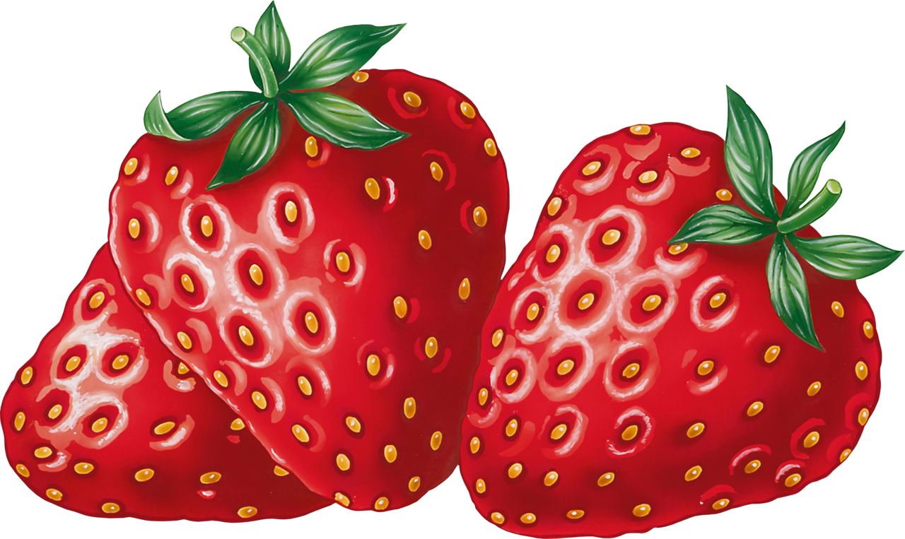

Welcome to my farm. Here we eat and live in an abundant way. Not so ordinary, but we are sooo extrodinary. We grow many different types of fruits and veggies here. Although I do love all fruits and veggies there is one imparticular that is my favorite. I love strawberries. They are sooo delicious and nutrtious. I love to eat them right out of the fridge. I have always loved strawberries as long as I can remember. Do you like strawberries too?
